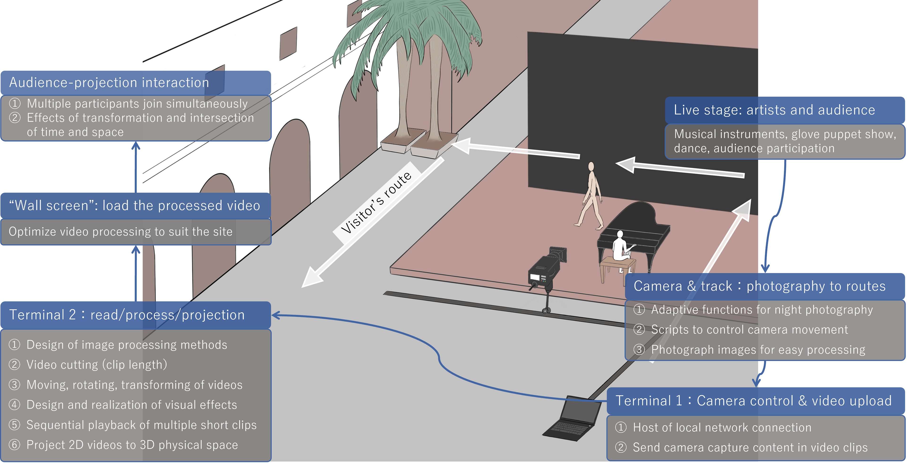
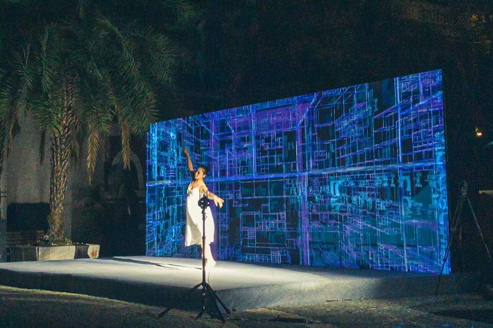
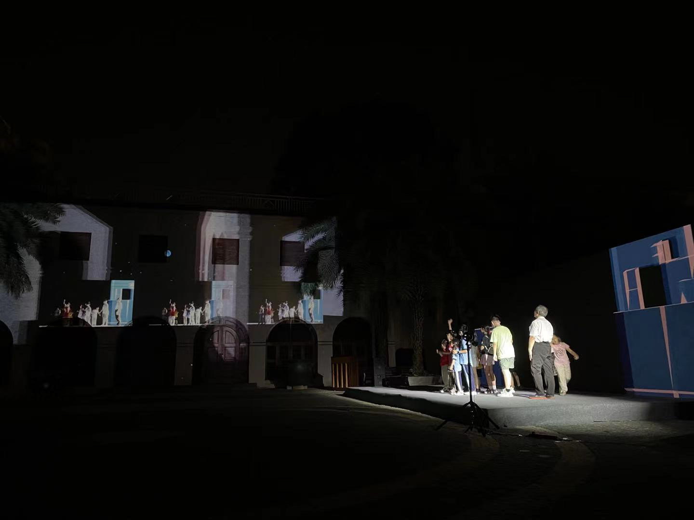
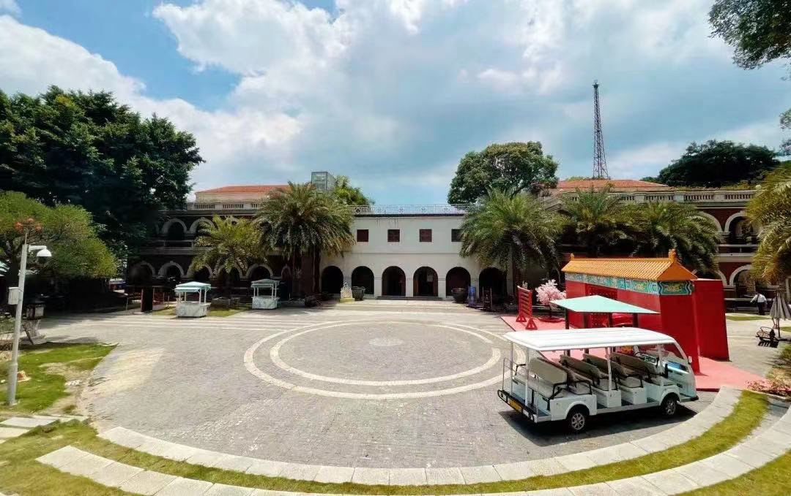
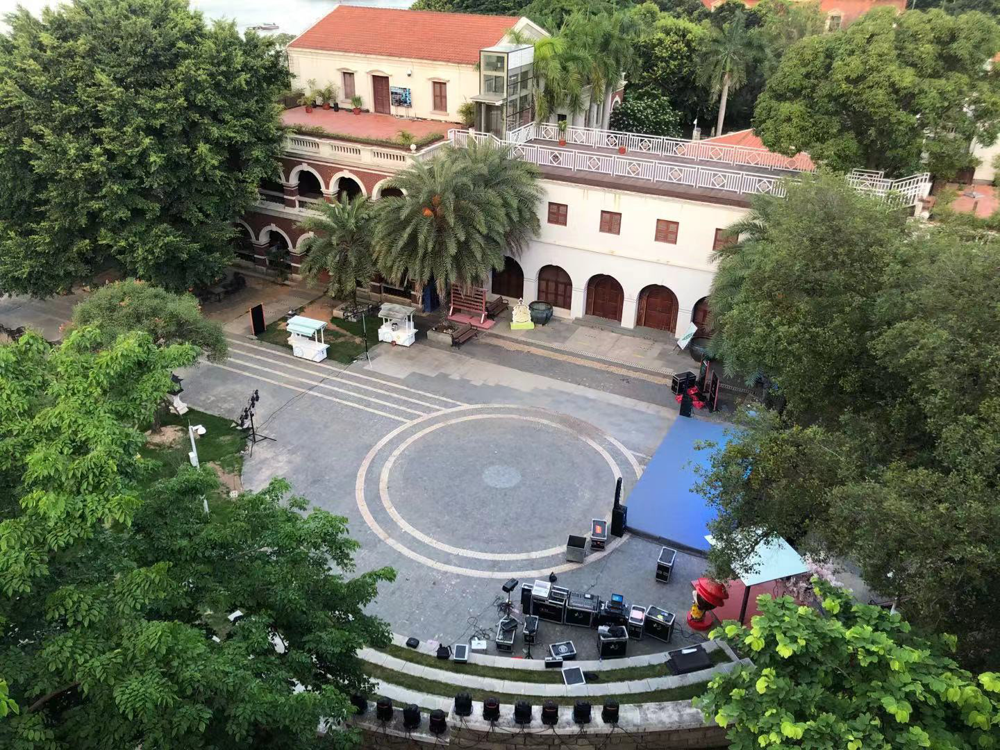

Time Prolongation: Outdoor Mixed Reality Interactive Show
Keywords: Digital Art; Group Interaction;
• 2020/10 - 2021/07
Time Prolongation was performed in the Foreign Cultural Relics Museum of the Forbidden City. This show aimed to integrate mixed reality technology with traditional culture and art performance, allowing audience to experience the innovative vitality inspired by history and future, and the collision of cultures.
Concept
This show featured a "time travel" stroyline divided into 5 chapters: "Time Compression", "Time Shift", "Time Rotation", "Time Expansion", and "Time Distortion".
Audiences witnessed performances by puppet theater and robotic “actors” sharing the same stage, alongside a fusion of Chinese and Western music performed by human artists.
In addition, we also hoped that through the novel outdoor mixed reality interaction, the audience could experience the connotation of "Time Prolongation" at close range,
feel the resonance of memory and reality, the special tension of reappearance and dissolution, and touch the eternal unchanged cultural pulse.

Layout design of performance site (Gulangyu island)Outputs
After 2 years of front-loaded artistic activities and advocacy preparations, this show was performed as a public-oriented event on Gulangyu island, a famous cultural and historical attractions in Xiamen City, China (June, 2021).
Gallery




